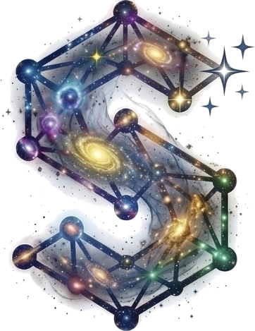

RMS
by Starlight
نظام إدارة المطاعم المتكامل
المطعم كله في نظام واحد: الصالة والكابتن، المطبخ، الكاشير، المنيو الرقمي عبر QR، المخزون، والتقارير. نظام عربي بالكامل يعمل كموقع إلكتروني أو كخادم محلي بلا إنترنت.
الكابتنالمطبخ KDSالكاشيرمنيو QRالمخزونالتقارير
كتيب تعريفي للشركات والمطاعم · الإصدار 1.0 · 2026

RMS by Starlightنبذة عن النظاممن عائلة أنظمة ستارلايت
نظام واحد يدير المطعم من الباب إلى الفاتورة
RMS by Starlight هو الشقيق الثالث في عائلة أنظمة ستارلايت، بعد نظامَي إدارة المدارس (SMS) وإدارة المستشفيات (HIS). بُني على نفس الأسس المجرّبة: هرم تنظيمي واضح، وصلاحيات حسب الدور، وسجل تدقيق لكل عملية حساسة، وواجهة عربية كاملة من اليمين إلى اليسار.
يجمع النظام كل من يعمل في المطعم على قاعدة بيانات واحدة: المالك والمدير، والكابتن في الصالة، والطاهي في المطبخ، والكاشير، وحتى الزبون الذي يطلب من هاتفه. يرى كل منهم ما يخصه فقط، في اللحظة نفسها.
3أنظمة في نظام واحد
5أدوار بصلاحيات مستقلة
QRمنيو رقمي لكل طاولة
Offlineيعمل بلا إنترنت
محتويات الكتيب
- لماذا RMS by Starlight؟3
- ثلاثة أنظمة في منصة واحدة4
- رحلة الطلب5
- نظام الكابتن6
- الكابتن على الجوال وتطبيق Android7
- منيو الزبون عبر QR8
- شاشة المطبخ (KDS)9
- الكاشير والفواتير10
- إدارة المنيو والطاولات11
- المخزون والوصفات12
- لوحة التحكم والتقارير13
- الموظفون والصلاحيات والأمان14
- هوية مطعمك على النظام15
- طرق التشغيل والعمل بلا إنترنت16
- المواصفات التقنية17
- خطوات التطبيق والتواصل18
RMS by Starlightلماذا RMS by Starlight؟
التحدي والحل
مشكلات يومية في كل مطعم، وحل واحد لها
تضيع على المطاعم أموال ووقت في تفاصيل صغيرة: ورقة طلب تُفقد، صنف يُحضَّر مرتين، فاتورة تُحسب يدويًا، مخزون ينفد دون أن يعلم أحد. صُمم النظام ليغلق هذه الثغرات واحدة واحدة.
أخطاء الطلبات الورقية
الكابتن يرسل الطلب إلى المطبخ مباشرة من الجهاز. لا خط غير مقروء، ولا ورقة ضائعة، ولا صنف منسي.
بطء الخدمة في أوقات الذروة
كل محطة (المطبخ، البار، الحلويات) ترى أصنافها فقط مرتبة بالوقت، والكابتن يُنبَّه فور جاهزية الصنف.
تسرّب الإيرادات
الأسعار تُقرأ من المنيو في الخادم فقط، والخصم والإلغاء بصلاحيات محددة وسبب مكتوب، وكل عملية في سجل التدقيق.
المخزون المجهول
لكل صنف وصفة، وتُخصم مكوّناتها تلقائيًا عند الدفع، مع تنبيه حين تنخفض أي مادة عن حدها الأدنى.
قرارات بلا أرقام
لوحة تحكم حيّة وتقارير مبيعات حسب الساعة والصنف والكابتن وطريقة الدفع، لأي فترة تختارها.
انقطاع الإنترنت
يعمل النظام على خادم محلي داخل المطعم بلا إنترنت، ويحتفظ بالطلبات أثناء الانقطاع ثم يزامنها تلقائيًا.
القيمة التي يحصل عليها المطعم
- خدمة أسرع وطلبات أدق من الصالة إلى المطبخ.
- رقابة كاملة على الإيرادات والخصومات والإلغاءات.
- تجربة عصرية للزبون: منيو بالصور وطلب ونداء من هاتفه.
- صورة واضحة للأداء يوميًا دون جداول يدوية.
RMS by Starlightثلاثة أنظمة في منصة واحدة
مكوّنات النظام
ثلاثة أنظمة، قاعدة بيانات واحدة
1إدارة المطعم
لوحة التحكم، تقارير المبيعات، المخزون والوصفات، الموظفون، سجل التدقيق، وإعدادات الضريبة والخدمة وهوية المطعم.
للمالك والمدير
2نظام المنيو
تصنيفات وأصناف بالصور والإضافات، زر «نفد/متوفر» فوري، ومنيو عام للزبون عبر رمز QR على كل طاولة.
للمدير والزبون
3نظام الكابتن
خريطة الطاولات بالألوان، أخذ الطلب وإرساله، موافقة طلبات QR، شاشة المطبخ، والكاشير.
للكابتن والمطبخ والكاشير
لوحة التحكم: مبيعات اليوم، الطاولات المشغولة، حالة المطبخ، وتنبيهات المخزون في شاشة واحدة.
خمسة أدوار، لكل منها شاشاته وصلاحياته
| المالك | كل شيء، على كل الفروع. |
|---|
| المدير | كل شيء في فرعه: المنيو، الطاولات، المخزون، التقارير، الموظفون، وإلغاء الطلبات. |
|---|
| الكاشير | الفواتير والدفع والخصم، والتقارير، ومتابعة الطلبات. |
|---|
| الكابتن | الطاولات، أخذ الطلبات، الموافقة على طلبات QR، التقديم، وطلب الفاتورة. |
|---|
| المطبخ | شاشة المطبخ فقط، دون أي وصول للفواتير أو التقارير. |
|---|
RMS by Starlightرحلة الطلب
كيف يعمل النظام
رحلة الطلب من الطاولة إلى التقرير
كل طلب يمر بمسار واضح ومتتبَّع. يرى كل شخص في المطعم حالته لحظة بلحظة، ولا يُفقد شيء بين الصالة والمطبخ والكاشير.
الزبونيمسح رمز QRيتصفح المنيو بالصور ويرسل طلبه أو ينادي الكابتن من هاتفه.
الكابتنيفتح الطاولةيأخذ الطلب بنفسه، أو يوافق على طلب الزبون قبل وصوله للمطبخ.
النظاميوزّع الأصنافكل صنف يذهب لمحطته: المطبخ، البار، أو الحلويات.
المطبخيحضّرانتظار ← قيد التحضير ← جاهز، ويُنبَّه الكابتن فورًا.
⬇
الكابتنيقدّميؤكد التقديم، ويضيف أصنافًا أو ينقل الطاولة عند الحاجة.
الكابتنيطلب الفاتورةتتحول الطاولة إلى «فاتورة» وتظهر عند الكاشير مباشرة.
الكاشيريستلم الدفعنقدًا أو بطاقة أو مقسّمًا، ثم يطبع الإيصال باسم المطعم وشعاره.
النظاميُغلق الدورةخصم المخزون، تحديث التقارير، تسجيل التدقيق، والطاولة «تنظيف».
طلب واحد لكل طاولة
لو فتح كابتنان الطاولة نفسها في اللحظة نفسها، يضمن الخادم طلبًا واحدًا فقط، فلا طلبات مكررة.
لقطة ثابتة للأسعار
يحفظ كل صنف في الطلب اسمه وسعره وقت الطلب، فلا تتغير الفواتير القديمة إذا عُدّل المنيو.
موافقة الكابتن على طلبات QR
أصناف الزبون لا تُحسب ولا تصل للمطبخ قبل أن يوافق عليها الكابتن، منعًا للعبث.
إلغاء منضبط
إلغاء صنف مُرسل يتطلب سببًا، وبعد بدء التحضير يتطلب صلاحية المدير.
RMS by Starlightنظام الكابتن
الصالة
خريطة الصالة بين يدي الكابتن
كل طاولة بلون يدل على حالتها: فارغة، مشغولة، بانتظار الفاتورة، محجوزة، أو قيد التنظيف. وفوق الخريطة شريط تنبيهات: زبون ينادي، صنف جاهز للتقديم، أو طلب QR بانتظار الموافقة.
خريطة الطاولات حسب القاعات، مع عدّاد لكل حالة وتنبيهات فورية.
شاشة الطاولة: إضافة الأصناف بالبحث أو التصنيف، متابعة حالة كل صنف، طلب الفاتورة، ونقل الطاولة.
- فتح الطاولة وتحديد عدد الضيوف.
- إضافة أصناف مع الإضافات والملاحظات.
- إرسال المسودة إلى المطبخ بلمسة.
- تأكيد تقديم الأصناف الجاهزة.
- نقل الطلب إلى طاولة أخرى.
- طلب الفاتورة وإعادة فتح الطلب.
RMS by Starlightالكابتن على الجوال
في جيب الكابتن
على الجوال، وفي تطبيق Android
يعمل نظام الكابتن من متصفح أي هاتف، ويمكن تثبيته على الشاشة الرئيسية كتطبيق. وللمطاعم التي تفضّل تطبيقًا أصليًا، يتوفر تطبيق Android للكابتن يعرض اسم المطعم وشعاره ويتصل بنفس الخادم.
تحديث حي
تتحدّث الخريطة والطلب كل بضع ثوانٍ، فيرى الكابتن الصنف الجاهز ونداء الزبون دون أن يحدّث الشاشة.
يتحمّل ضعف الشبكة
عند انقطاع الاتصال يظهر شريط تنبيه، وتُحفظ الطلبات حتى يعود الاتصال ثم تُرسل تلقائيًا دون تكرار.
RMS by Starlightمنيو الزبون عبر QR
تجربة الزبون
المنيو في هاتف الزبون
على كل طاولة رمز QR خاص بها. يمسحه الزبون فيفتح منيو المطعم باسمه وشعاره، دون تحميل أي تطبيق.
المنيو بالتصنيفات والأسعار
- تصفّح وطلب: الزبون يختار الأصناف والإضافات ويرسل طلبه، فيصل للكابتن «بانتظار الموافقة».
- نداء بلمسة: أزرار «نادِ الكابتن» و«ماء» و«الفاتورة» تظهر فورًا في تنبيهات الكابتن.
- متابعة الطلب: يرى الزبون ما طلبه وحالته على الطاولة.
- منيو عرض فقط: يمكن للمطعم إيقاف الطلب من QR والإبقاء على المنيو للعرض.
- حماية: المسارات العامة محدودة المعدّل، ورمز كل طاولة فريد لا يُخمَّن.
RMS by Starlightشاشة المطبخ
Kitchen Display System
شاشة المطبخ: وداعًا للأوراق
شاشة على الحائط أو جهاز لوحي في المطبخ تعرض الأصناف المرسلة مرتبة بوقت الإرسال، مجمّعة حسب الطاولة، مع اسم الكابتن والوقت المنقضي.
كل صنف يمر بثلاث حالات بلمسة واحدة: انتظار ← قيد التحضير ← جاهز.
محطات منفصلة
لكل تصنيف محطته: المطبخ، البار، الحلويات. وكل محطة تعرض أصنافها فقط.
إشعار الجاهزية
بمجرد أن يصبح الصنف «جاهز» يظهر تنبيه للكابتن على خريطة الطاولات.
صلاحيات محدودة
حساب المطبخ يرى شاشة التحضير فقط، ولا يصل إلى الفواتير أو التقارير.
RMS by Starlightالكاشير والفواتير
الدفع
الكاشير: فاتورة دقيقة في ثوانٍ
تظهر الطلبات المفتوحة مرتبة، ويختار الكاشير الطلب فيرى الفاتورة كاملة مع الضريبة ورسوم الخدمة، ثم يستلم الدفع ويطبع الإيصال.
الفاتورة جاهزة للطباعة باسم المطعم وشعاره، مع الدفع النقدي أو بالبطاقة أو المقسّم.
دفع مقسّم
جزء نقدًا وجزء بالبطاقة، أو عدة دفعات للطلب نفسه. لا يُغلق الطلب إلا إذا غطّت الدفعات الإجمالي.
لا دفع مزدوج
الخادم يمنع دفع الطلب مرتين حتى لو ضُغط الزر مرتين أو انقطع الاتصال وأُعيد الإرسال.
خصم بصلاحية
الخصم للكاشير والمدير فقط، ويُسجَّل في سجل التدقيق مع اسم المنفّذ.
إغلاق تلقائي
بعد الدفع: خصم المخزون حسب الوصفات، وتحويل الطاولة إلى «تنظيف»، وتحديث التقارير.
RMS by Starlightإدارة المنيو والطاولات
الإعداد
المنيو والطاولات تحت سيطرتك
إدارة المنيو: تصنيفات بمحطات، وأصناف بالسعر والصورة والإضافات، وزر «متوفر/نفد».
القاعات والطاولات، مع بطاقات QR جاهزة للطباعة تحمل اسم المطعم وشعاره ورقم الطاولة.
- صور للأصناف بصيغ PNG وJPG وWebP.
- إضافات بأسعار (حجم، صوص، إضافة جبن…).
- «نفد» يُخفي الصنف فورًا من الكابتن والزبون.
- قاعات متعددة: داخلية، عائلية، تراس.
- عدد مقاعد لكل طاولة.
- طباعة رموز QR لكل الطاولات دفعة واحدة.
RMS by Starlightالمخزون والوصفات
التكاليف
مخزون يُخصم وحده
اربط كل صنف بوصفته: كم غرامًا من الدجاج، وكم من الأرز، وكم من الخبز. عند دفع الطلب يخصم النظام المكوّنات تلقائيًا، فتعرف دائمًا ما لديك فعلًا.
المواد بالكميات والوحدات والحد الأدنى، مع حركات الشراء والتسوية والهدر.
وصفات
مكوّنات كل صنف بالكمية والوحدة.
تنبيه النقص
تظهر المادة في لوحة التحكم عند نزولها تحت الحد الأدنى.
سجل الحركات
شراء، تسوية جرد، هدر، وخصم بيع، كلها مؤرخة وباسم المنفّذ.
RMS by Starlightلوحة التحكم والتقارير
القرار
أرقام المطعم في لحظتها
تقارير لأي فترة تختارها: المبيعات، عدد الفواتير، متوسط الفاتورة، الخصومات، الأصناف الملغاة، الأكثر مبيعًا، المبيعات حسب الساعة، طرق الدفع، وأداء كل كابتن.
التقارير: الأصناف الأكثر مبيعًا، المبيعات حسب الساعة، طرق الدفع، أداء الكباتن، ونوع الطلب.
سجل الطلبات: كل طلب برقمه وطاولته وكابتنه وحالته وإجماليه، مع البحث بالتاريخ.
RMS by Starlightالموظفون والصلاحيات والأمان
الرقابة
كل عملية معروفة: من فعلها ومتى
الموظفون والأدوار وإعادة تعيين كلمات المرور.
سجل التدقيق: كل إنشاء وتعديل ودفع وإلغاء، باسم المنفّذ ووقته.
الأمان مطبّق على الخادم، لا في الواجهة فقط
- صلاحيات حسب الدور (RBAC): كل طلب يُفحص في الخادم حسب دور المستخدم وفرعه.
- الأسعار من قاعدة البيانات دائمًا: لا يُوثق بأي سعر يصل من الجهاز.
- كلمات مرور قوية إلزامية: كلمة المرور المؤقتة أو الضعيفة تُجبر على التغيير قبل أي استخدام.
- منع التكرار: مفتاح لكل عملية يمنع تنفيذها مرتين عند إعادة الإرسال.
- رفع الصور بأمان: PNG وJPG وWebP فقط، مع رفض SVG وتحديد الحجم.
- سجل تدقيق لكل عملية حساسة، كما في أنظمة ستارلايت للمدارس والمستشفيات.
RMS by Starlightهوية مطعمك على النظام
White-label
النظام يحمل اسم مطعمك وشعاره
من صفحة الإعدادات يرفع المالك أو المدير شعار المطعم ويكتب اسمه، فيظهران فورًا في كل مكان يراه الموظفون والزبائن.
الإعدادات ← هوية المطعم: سحب الشعار وإفلاته، الاسم، وإعدادات الضريبة والخدمة والعملة.
أين يظهر الاسم والشعار؟
- الشريط الجانبي وعنوان المتصفح وأيقونته.
- شاشة الدخول.
- منيو الزبون عبر QR.
- بطاقات QR المطبوعة.
- إيصال الكاشير.
- تطبيق الكابتن على Android.
RMS by Starlightطرق التشغيل
النشر
موقع إلكتروني، أو خادم محلي بلا إنترنت
النظام نفسه يعمل بثلاث طرق، ويختار المطعم ما يناسبه:
1موقع إلكتروني
على خادم سحابي ودومين خاص (HTTPS). مناسب للفروع المتعددة والإدارة من خارج المطعم.
2خادم محلي
على جهاز داخل المطعم. كل الأجهزة تتصل عبر شبكة Wi-Fi المطعم، ولا حاجة للإنترنت إطلاقًا.
3تطبيق مثبّت (PWA)
يُثبَّت من المتصفح على الجوال أو الحاسوب، ويواصل العمل أثناء انقطاع الاتصال.
العمل أثناء انقطاع الاتصال
- الشاشات والمنيو محفوظة على الجهاز وتفتح فورًا حتى بلا اتصال.
- الطلبات التي يأخذها الكابتن أثناء الانقطاع تُحفظ في طابور، ثم تُرسل تلقائيًا عند عودة الاتصال، دون تكرار.
- مؤشر واضح في الشريط الجانبي: متصل، بلا اتصال، أو طلبات بانتظار المزامنة.
- إن رفض الخادم طلبًا عند المزامنة (مثلًا صنف نفد) يظهر إشعار بالسبب.
خادم محلي آمن بأمر واحد
يُشغَّل النظام كاملًا على جهاز المطعم بأمر واحد. ومع خادم Caddy يعمل الاتصال المحلي عبر HTTPS بشهادة خاصة بالمطعم، مع صفحة إعداد تشرح تثبيت الشهادة على أجهزة Android وiPhone وويندوز وماك خطوة بخطوة.
RMS by Starlightالمواصفات التقنية
تحت الغطاء
المواصفات التقنية
| الخادم | Node.js وExpress، مع Sequelize وقاعدة بيانات PostgreSQL. |
|---|
| الواجهة | React وVite، عربية بالكامل من اليمين لليسار، بتصميم Liquid Glass مستوحى من هوية Starlight وخط Times New Roman. |
|---|
| تطبيق الكابتن | Android أصلي بلغة Kotlin وJetpack Compose، بنفس تصميم Liquid Glass. |
|---|
| المصادقة | JWT مع صلاحيات حسب الدور، وإلزام بتغيير كلمات المرور المؤقتة. |
|---|
| العمل بلا اتصال | Service Worker وطابور طلبات مع مفاتيح منع التكرار. |
|---|
| التشغيل المحلي | أمر واحد، أو Docker Compose مع Caddy وHTTPS داخلي. |
|---|
| التحديث الحي | تحديث دوري كل 4 إلى 5 ثوانٍ للمطبخ والكابتن، دون تعقيد في النشر. |
|---|
| الأجهزة | أي متصفح حديث على الحاسوب أو الجهاز اللوحي أو الجوال، وطابعة إيصالات عبر المتصفح. |
|---|
من عائلة أنظمة ستارلايت
يتبع RMS نفس البنية التي بُني عليها نظاما المدارس والمستشفيات، فمن يعرف أحدها يعرف الآخر:
| SMS · المدارس | HIS · المستشفيات | RMS · المطاعم |
|---|
| المدرسة | المستشفى | المطعم / الفرع |
| الصف ← الشعبة | القسم ← السرير | القاعة ← الطاولة |
| الطالب | المريض | الطلب |
| المنهج | الخدمات الطبية | المنيو |
| الأقساط والمحاسبة | الفوترة والتأمين | الفواتير والدفع |
| المخزون | الصيدلية والمخزون | المخزون والوصفات |
| سجل التدقيق | سجل التدقيق | سجل التدقيق |
من التوقيع إلى أول طلب
1زيارة وتحليل
نتعرف على مطعمك: القاعات والطاولات، المحطات، الأصناف، وطريقة العمل.
2الإعداد
إدخال المنيو والصور والوصفات، تجهيز الطاولات ورموز QR، وإضافة اسم المطعم وشعاره.
3التشغيل والتدريب
تركيب الخادم (سحابي أو محلي)، وتدريب الكباتن والمطبخ والكاشير والإدارة.
4الدعم والمتابعة
متابعة بعد الإطلاق، وتحديثات، وتوسعة لفروع جديدة متى أردت.
لنحجز لك عرضًا حيًا للنظام
نزورك ونشغّل النظام على أجهزتك، ونريك كيف يبدو مطعمك عليه باسمه وشعاره.
| الشركة | Starlight للحلول التقنية · Starlight Tech Solutions |
|---|
| واتساب | ـــــــــــــــــــ |
|---|
| إنستغرام | ـــــــــــــــــــ |
|---|
| البريد الإلكتروني | ـــــــــــــــــــ |
|---|